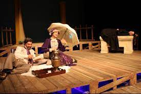

MODERN TÜRK TİYATROSU VE GELİŞİM EVRELERİ
AnasayfaTürk Dili ve EdebiyatıModern Türk Tiyatrosu
Modern Türk Tiyatrosu
MODERN TÜRK TİYATROSU VE GELİŞİM EVRELERİ
Modern Türk Tiyatrosu
Geleneksel tiyatrodan ayrı olarak Batı Tiyatrosu üç döneme ayrılır:
1)1839’dan 1908’e kadar olan dönem, Tanzimat Tiyatrosu;
2)1908’den 1923’e kadar olan dönem, Meşrutiyet Tiyatrosu;
3)1923’ten sonraki dönem de, Cumhuriyet Tiyatrosu.
Kazanılan kimi savaşların ardından ya da halkın coşkuyla karşıladığı bazı durumlarda 40 gün 40 gece süren şenlikler düzenlenmiş ve bu şenliklerde seyirlik oyunlar geniş ölçüde yer almış; böylece saray, esnaf, ordu ve halkın çeşitli kesimleri bir araya gelmişlerdir. Batı tiyatrosunun Türkiye’ ye girmesiyle saray bununla da ilgilenmiş, dışarıdaki tiyatro
topluluklarına imtiyazlar, fermanlar verilerek bunlar belirli ödeneklerle desteklendiği gibi, ayrıca; Çırağan, Dolmabahçe ve Yıldız saraylarında tiyatrolar kurulmuştur. Saray içinde de gerek yabancı, gerek yerli, kalıcı tiyatro toplulukları oluşturulmuş, bunlar asker gibi üniformalar giymişler, çalışmaları madalyalar, rütbelerle değerlendirilmiş, içlerinde paşa katına yükselenler bile olmuştur. Örneğin; Donizette Paşa, Guatelli Paşa. 1908’de Meşrutiyet Tiyatrosu ile Saray Tiyatrosu sona erdi.
Sonuncu gelenek olan Batı Tiyatrosu da belli bir çevrenin, toplumsal kesimin tiyatrosu olmuştur. İstanbul, Bursa, İzmir, Edirne, Adana gibi kentlerde gelişen Batı tiyatrosunun, Türkiye Cumhuriyeti döneminde bile bütün yurt düzeyine yayıldığı söylenemez.
Batı tiyatrosunun ayrıldığı üç evreyle ilgili olarak da şunun bilinmesi gerekir: Her evre, hem tiyatro açısından hem de anayasal ve siyasal değişiklikler açısından şekillenmiştir. Şöyle ki: 1839, Gülhane Hattı Hümayûnu’nun okunduğu yıl olduğu gibi, İstanbul’ da dört tiyatronun açıldığı yıldır. 1908 yılı hürriyetin ilânı ve Meşrutiyet’in kabulü olduğu kadar; tiyatro bakımından da önemli bir yıldır; çünkü, 1884 yılından başlayarak 1908’e kadar, II. Abdülhamit’in sıkı denetimi altında tiyatro etkinliği ve onun gelişimi durmuş, oyun yazarları oyun yazamaz olmuşlardır.
1908’de, Hürriyet’in ilânının daha ilk haftalarında tiyatro etkinliği başlamış, yazarlar baş döndürücü bir çabuklukla oyunlar yazmışlardır. 1923 ise; aslında tam olarak Meşrutiyet’ in bittiği yıl olarak kabul edilmeyebilir, fakat, bu tarihte anayasal düzende değişiklik olması ve Cumhuriyet’ in ilânı, bu tarihi, önemli bir başlangıç yapmaya da yetiyor. 1923, tiyatro bakımından bir dönüm noktasıdır. Tiyatromuzun en önemli sorunu olan, kadının sahneye çıkamamasının, Atatürk’ün yüreklendirmesi ve verdiği güvence ile ortadan kalkmış olduğu gibi, ayrıca, gene 1923 yılında Ankara Hükûmeti, tiyatroyu desteklemek konusunda ilk adımı atmıştır.
Türkiye’ de tiyatronun gelişmesinde Büyük Elçiliklerin de katkıları fazladır. Devlet Erkânı’ nın görevlendirmesiyle, gittikleri seyahatlerde, o bölgenin sanat yaklaşımını, yeni yazılmış eserlerin biçemini, türünü, yazarını ve tiyatro mimârîsini yakından takip etmiş ve yurda döndüklerinde bu bilgileri aktarmışlardır.
Ülkemize tiyatronun tam mânâsı ile kazandırılabilmesi için de; yabancı oyun yazarlarının eserleri tercüme ettirilmiş ve bu eserler, adaptasyon yoluyla, Türk Tiyatrosu arşivine katılmıştır.
II. Mahmut’un, 1836’da Fransa’dan sipariş ettiği oyun sayısı 500’dür. Bunun 40’ı tragedya, 50’si dram, 30’u komedya ve 280’i vodvildir.
Türkiye’de yazılan ilk eser; Şinâsi Efendi’nin Şair Evlenmesi adlı eseridir. Bu eserden 15 – 20 sene öncesinde yazıldığı anlaşılan bir başka eser daha vardır, fakat; o eserin hiçbir edebî yanı olmadığı da ortaya çıktığı için Şair Evlenmesi’nin tahtı sallanmamıştır.

Tiyatronun gelişimi için basın da destek veriyordu. Zirâ, Şair Evlenmesi nin gösterimleri bittikten sonra eserin metninin gazetede yayımlanması buna güzel bir örnektir.
İleriki yıllarda da tiyatronun gelişimi, Ankara Hükûmeti ve bilhassa Atatürk‘ ün çabalarıyla sürdürüldü.
Devlet Konservatuarı kurulmasını gönülden isteyen Atatürk, bununla ilgili çalışmaları başlattı. İstanbul’da ilk Devlet Konservatuarı kuruldu. Başına, Muhsin Ertuğrul getirildi. Muhsin Ertuğrul, hem müdürlük hem rejisörlük hem de okutmanlık yapıyordu. Kendi öğrencilerinden oluşan bir oyuncu kadrosu da vardı. Tiyatroya oyuncu kazandırma ve oyun sahneleme konularında öcü ve başarılı bir tiyatrocu olduğu muhakkaktır.
Cumhuriyet Devri
Modern Türk Tiyatrosundan kasıt Cumhuriyetin ilanından (1923) günümüze dek olan zamandır. Osmanlı imparatorluğunun çöküşü ve Cumhuriyetin ilanı ile tiyatro gibi kamusal görevini en yaygın biçimde gerçekleştirecek bir sanat dalının gelişmesi için olanaklar hazırlanmıştır. Cumhuriyet döneminin ilk yıllarında bocalama, daha sonra ortaya çıkan bilinçlenme, sorunların tanınması ve çözümlenmesi bu döneminin getirdiği olgulardır. Devletin sanatı desteklemesi ile teknik kadrolar gelişmiştir.
Halk evleri yoluyla eğitim, ödenekli tiyatroların ve okulların kurulması Cumhuriyetin getirdiği değişikliklerdir. Ancak bu ilgi sonradan azalmış ve ortaya çıkan gevşeklik Devlet eliyle yönetilen sanat kurumlarına da yansımıştır. 27 Mayıs hareketinin ardından değişen sadece siyasi yapı olmamıştır, tiyatro da etkilenmiştir. Zira tiyatro toplumsal ve siyasal olaylardan etkilenen bir sanat dalıdır.
Cumhuriyetin ilk yıllarında Osmanlıda olduğu gibi oyunlar aynen Batıdan alınıp aktarılmıştır. Yazarlarımız oyunlarında genellikle toplumsal sorunlara değinmişlerdir. 61 Anayasasından sonra yazarlarımız daha rahat çalışmışlardır. Çünkü istedikleri konulara yönelebilmişlerdir. Yasaklayıcı zihniyet eskiye oranla etkisini kaybetmiştir.
Cumhuriyet dönemi kendi içinde çeşitli evrelerden oluşmuştur. Bunlar,
- Dünya Savaşı kuşağı
- Cumhuriyetin ilk 20 yılında çıkan yazarlar
- Dünya savaşı kuşağı
- 1950 kuşağı
- 1960 kuşağıdır.
1. Dünya Savaşı Kuşağı
Gerek ilk dünya savaşı gerekse Kurtuluş savaşı bu dönem tiyatrosunda iz bırakmıştır. Bu kuşağın en önemli tiyatro yazarı Musahipzade Celal‘dir. Yazar oyunlarını geçmişin olaylarından alır. (Selma hariç)oyunlar günümüze de ışık tutmaktadır. Başlıca oyunları Balaban Ağa, Pazartesi-Perşembe, Fermanlı Deli Hazretleri, Atlı Ases ve Gülsüm, Kafes Arkasında’dır.
Bu kuşağın başka bir önemli yazarı Reşat Nuri Gültekin‘dir. Başlıca oyunları İstiklal, Yaprak Dökümü, Eski Şarkı’dır. Başka bir yazar Hüseyin Rahmi Gürpınar‘dır. Kadın Erkekleşince adlı oyunu yazmıştır. Anlaşılacağı üzere bu dönemde Atatürk Türkiyesi’nin devrimci niteliği, çağdaş medeniyetler seviyesine ulaşma isteği etkilidir.
2. Cumhuriyet’in İlk 20 Yılındaki Yazar Kuşağı
Bu evrenin yazarları genellikle ruhsal çelişkiler, değer yargılarının değişmesi, efsanelere yönelerek ulusçuluğu getiren düşüncelere yönelmişlerdir. Nazım Hikmet, Necip Fazıl Kısakürek eserlerinde kişilerin ruh hallerini çok iyi belirtmişlerdir. Ayrıca Vedat Nedim Tör “Kör” adlı oyunu, Cevdet Kudret Tersine Akan Nehri, Halit Fahri hayaleti, Faruk Nafiz Çamlıbel Yayla Kartalı’nı yazmıştır.Cumhuriyetin ilanından sonra Nazım Hikmet ekonomik açıdan sömürü konusunu işlemiştir. Ayrıca bu dönemde ülkücülüğün de övüldüğü destanlardan yaralanılarak meydana getirilmiş eserler vardır.
3. İkinci Dünya Savaşı Kuşağı
Bu yazarlarımız eserlerinde batılılaşma düşüncesinin nasıl yanlış anlaşıldığını işlemişlerdir. Aile teması sadece dar ahlak kuralları içerisinde değil, aynı zamanda ekonomik durumu içerisinde de ele alınır.
Bu kuşağın belli başlı üç önemli yazarı vardır:
- Ahmet Muhip Dranas
- Ahmet Kutsi Tecer
- Cevat Fehmi Başkut
1950 Kuşağı
Cumhuriyet döneminin hem oyun yazarlığı hem de çeşitli tiyatro yönelişleri açısından en yoğun kuşağıdır. Sorunları sadece belirtmeyen aynı zamanda çözüm de sunan bir anlayış hakimdir. Bu kuşağın dört önemli özelliği vardır. Bunlar bireyden topum sorunlarına yönelme, olaylardan ve durumlardan toplum sorunlarına yönelme, evrensel anlamda sorunlar ve bu yoldan toplumu irdeleme ve son olarak köy sorunlarını irdelemedir.
Bu kuşağın önemli yazarları:
- Melih Cevdet Anday,
- Haldun Taner,
- Nazım Kurşunlu,
- Çetin Altan,
- Turgut Özakman,
- Aziz Nesin,
- Orhan Asena,
- Necati Cumali,
- Recep Bilginer,
- Cahit Atay‘dır.
1960 Kuşağı
Bu kuşak daha önceki kuşaktan politik eğilimleri ve daha sert olmalarıyla ayrılır. Bu dönemde sadece toplumsal sorunlar değil Türkiye’nin dış politikası da eleştirilir. yazarlar arasında bu dönemde üç farklı eğilim vardır. Bunlar toplum düzensizlikleri dünya siyaseti ve nedenlerine genellemesine yöneliş, efsane yada tarihe dayanarak çağın eleştirisi ve son olarak insanlık sorunları üzerine genellemesine yöneliştir.
Önemli yazarlar:
Sermet Çağan,
Adalet Ağaoğlu,
Kerim Korcan,
Vasıf Öngören,
Turan Oflazoğlu‘dur.

1970’den bu yana Türk Tiyatrosu
Bilindiği gibi yetmişli yıllar toplumsal huzursuzlukların yoğun olduğu dönemlerdir. 12 Eylül harekatı ve 12 Mart muhtırası sanatı da etkilemiştir. Zaten tiyatroyu toplumsal yaşayıştan ayırmak mümkün değildir. Yetmişlerin başarında durmadan çoğalan özel tiyatrolar dikkatimizi çekmektedir. Belli oyunlarda ön plana çıkan oyuncular kendi tiyatroları kurmuşlardır. Ve önemli oyunları çok yeterli olmayan kadrolarla oynamışlardır. Kalite de bir düşüklük olmuştur. Özel tiyatrolar daha çok güldürülerle seyirci kazanmak isterken sloganist sol taktiğiyle de ticari kaygılarını karşılamaya çalışmışlardır. Dostlar Tiyatrosu ve Kent Oyuncuları bu dönemde kurulmuştur.
Halk evlerinin kapatılması bir çok şeyde olduğu gibi tiyatroda da olumsuz etki yapmıştır. Oyun yasaklamaları bu dönemi ilginç bir duruma getirmiştir. 60’lı yıllarda başlayan geleneksel tiyatrodan çıkarak çağdaş bir sentez yakalama yönelişi özellikle bu dönemde yoğunluk kazanmıştır. Sonradan özel tiyatrolar ekonomik nedenlerden dolayı kapanmaya başlamıştır. Tiyatro bunalıma girmiştir. Çünkü Cumhuriyet yıllarındaki desteklerden, çalışmalardan başka yeni çalışmalar yapılmamıştır. Bu bunalım zamanla iyice belirginleşmiştir. Ancak bu noktada yabancı ülkelerdeki bunalımla bizim ülkemizdeki bunalımı ayırmak gerekir. Bizim tiyatromuz batıyı taklit ettiği için bir sıradanlık yaşamaktadır. Batı ise teknolojik gelişmelerle değişen toplum düzenlerini anlatmak için kullanılan çok fazla tiyatro akımlarının yorgunluğunu yaşamaktadır. 75’li yıllarda tiyatro üzerinde baskılar artmıştır. Ama gelişmeler yaşanmaktadır. Muhsin Ertuğrul’un çabasıyla çocuk tiyatroları kurulmuştur. 77 dönemi tiyatrolar için bir soluk alma dönemi olmuştur. Yeni hükümet sanata önem verince bazı sorunlar çözümlenir gibi olmuştur. 78 yılında Muhsin Ertuğrul hayata gözlerini yummuştur. Bu tiyatromuz için büyük bir kayıptır.
70’den bu yana oyun yazarlığında azalma görülür. Bunda baskılar ve yasaklamaların etkisi vardır. önemli oyunlar şunlardır. Turan Oflazoğlu‘nun Genç Osman-Bizans Düştü-Kösem Sultan-3. selim, Özdemir Nutku‘nun Söylevi tarihsel oyunlardır. Vasıf Öngören Asiye Nasıl Kurtulur ile toplumsal sorunları Almanya Defteriyle gurbetçi sorunlarını dile getirmiştir. Orhan Asena Seyişbaşı Konağıyla aile ilişkilerini, Aziz Nesin ve Haldun Taner taşlamalı güldürüleriyle toplumsal sorunları anlatmıştır.